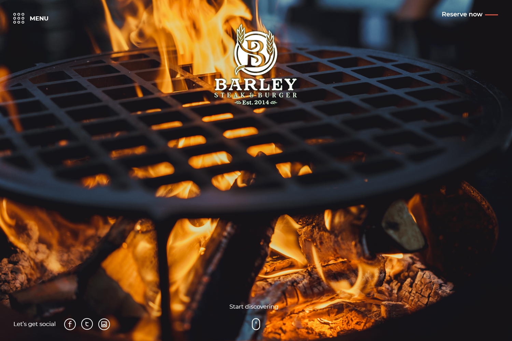
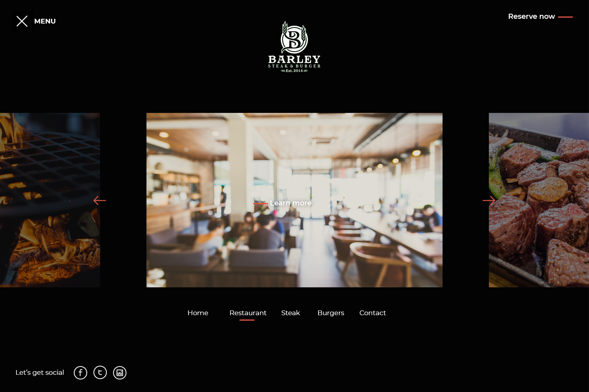
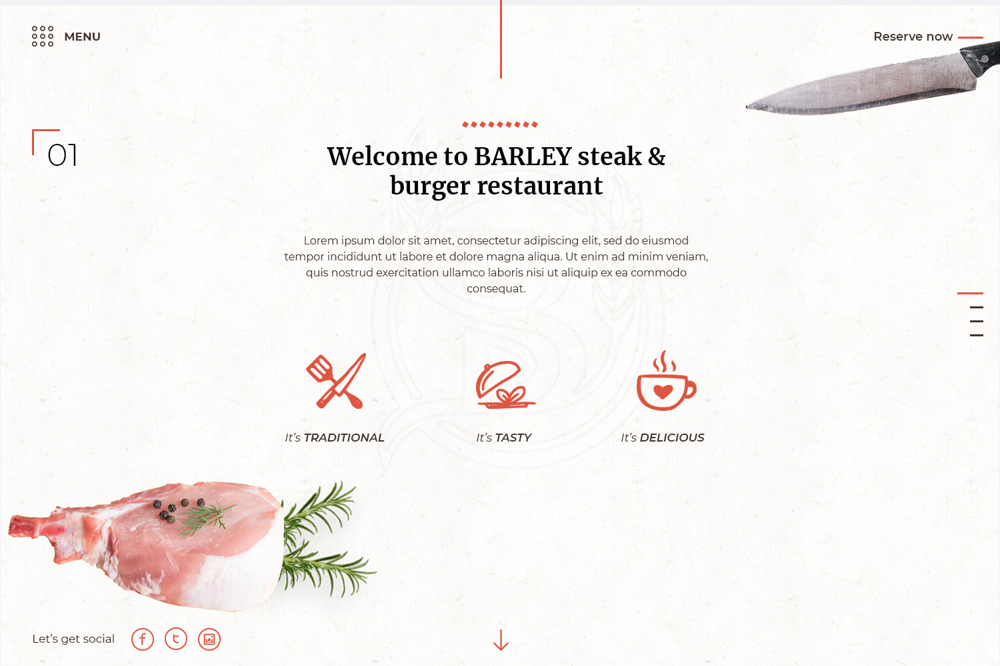
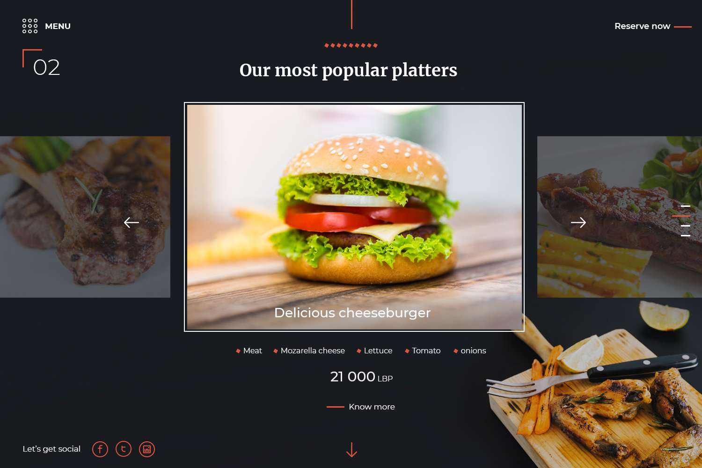
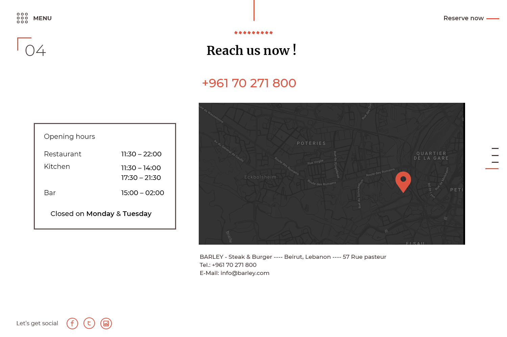
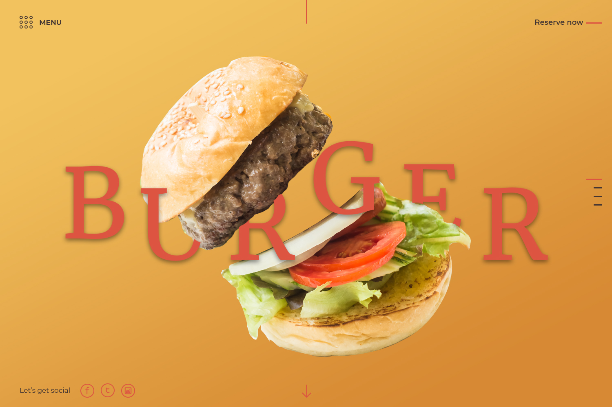
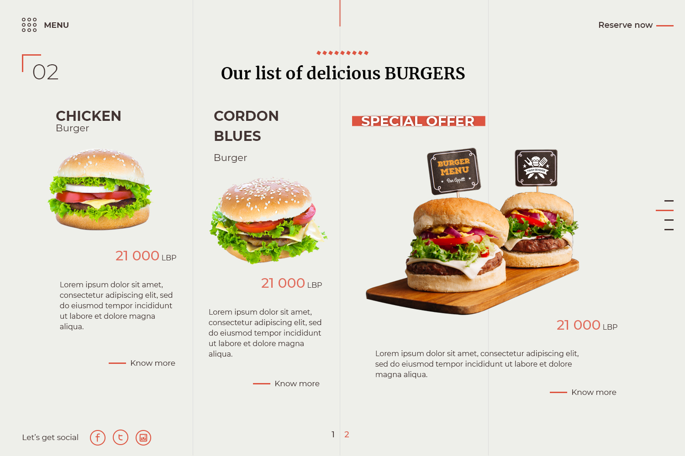
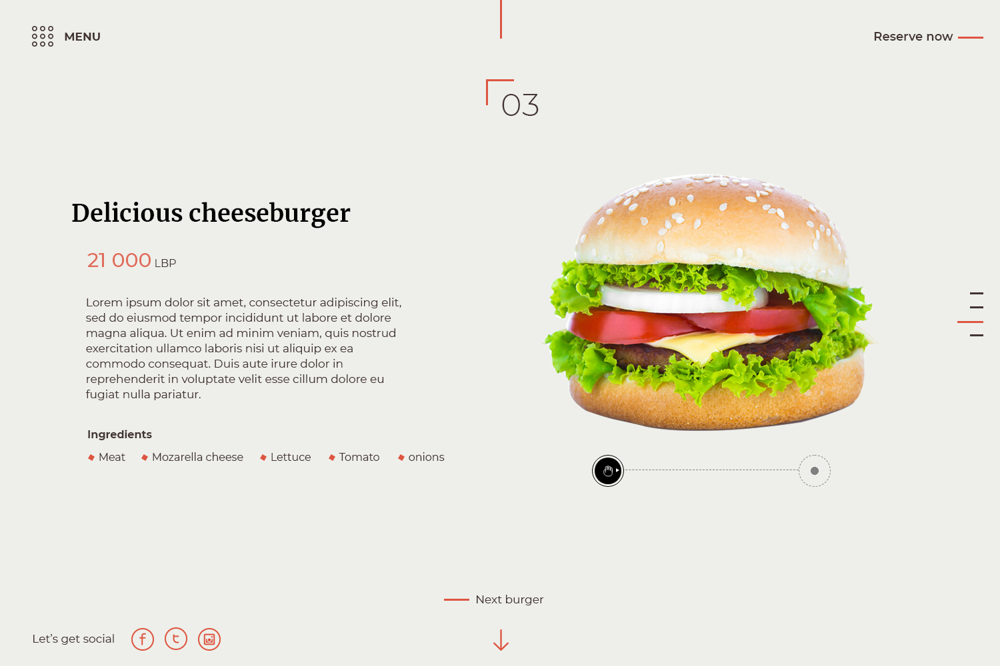

Fire, steak
& the perfect burger
A full-screen, story-driven website for Barley: a Beirut steak & burger house. Each section is its own cinematic frame: a flame-grilled hero, a blurred dining room, popular platters and a full burger menu, switching between charcoal-dark and warm cream.

An entrance, then a welcome
A full-screen carousel menu reveals the sections, then a cream "welcome" frame introduces the kitchen's traditional, tasty, delicious promise.


Plates worth the trip
A dark platter carousel puts the cheeseburger centre stage with ingredients and price, while contact lays out hours and a map of the Beirut location.


A menu that floats off the page
An amber burger title screen breaks the rhythm, then a paginated burger list and a single-burger detail close out the journey.



Three words, every plate
Charcoal grilling and a heritage crest, Est. 2014, carried through every frame.
Full-bleed food photography sits at the centre of each section, never an afterthought.
A coral accent and high-contrast serif tie the dark and cream worlds into one identity.